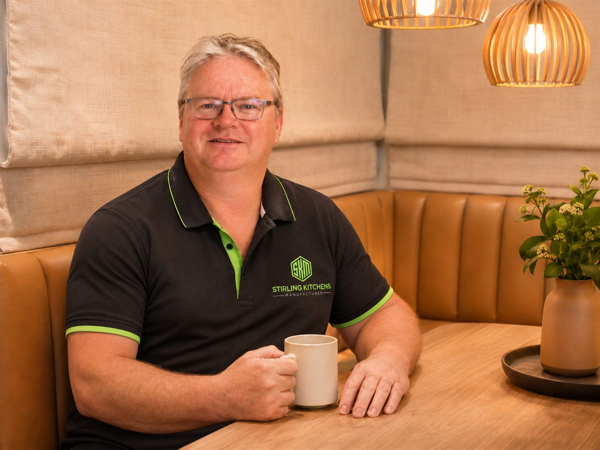

Breakfast & dining nooks
One straight bench against a wall, with chairs on the open side.
If the kitchen is the heart of the home, the dining table is where it gets fed. Comfortable seating makes the good conversations last longer.
Most kitchens have a corner that isn't doing anything. A built-in booth or banquette turns it into the place everyone gathers, with more seats than chairs allow and storage underneath.
We measure in 3D, design in CAD, build in our own workshop and install it ourselves, for homes across Auckland and further afield. It can match your existing cabinetry or be part of a new custom kitchen.

These are the layouts we're asked for most. Photos are style references.
One straight bench against a wall, with chairs on the open side.

Two benches meeting in a corner. Seats four to six.

Seating on three sides, café-style. The most seats in the least space.

Wraps around a round table or follows a curved wall. Hard to buy off the shelf.

Built to the exact shape of a bay or picture window.

Built into the kitchen island, so the cook stays part of the conversation.

Two benches sharing one back, each with its own table. Ideal for open-plan rooms, home bars and games rooms.

Dining bench on one side, sofa on the other, sharing one fluted oak wall.
Ready-made benches come in fixed lengths. Real kitchens don't.

Built to the millimetre, even when walls aren't square or floors aren't level.
Lift-up seats or pull-out drawers for linen, school bags and toys.
Fabric, leather, vinyl or hard-wearing performance fabrics for kids and pets.
The same board, timber and finishes as your cabinetry.
Call, or send a photo of the space and we'll send back a render of booth seating in it.
An accurate 3D measure, then a CAD design built around your table and how many you want to seat.
Made by our own team. Not imported. Not outsourced.
We install it and leave the space tidy.
Scanned in 3D, designed in CAD, built to fit to the millimetre.


Craig has spent 30 years designing kitchens. He knows a kitchen is judged on an ordinary Tuesday morning, not the day it's finished, and he designs booth seating the same way: where the table sits, how easily you slide in, and where the school bags go.

Style references, not our finished projects. Your nook will be designed for your home.


Not much. Both are bench seating fixed against a wall or into a corner, usually around a dining table. "Booth" tends to mean seating on two or three sides, like a café booth. "Banquette" is the furniture-design term for a built-in upholstered bench, and is sometimes searched as "banquet seating". We build both.
Custom banquette seating starts from $9,000. The final cost depends on the length of seating, the layout (straight, L-shaped, U-shaped or curved), whether it includes storage, and the upholstery you choose. Call 09 279 8984 for a quote.
As a general guide, a comfortable banquette seat sits about 450 mm high including the cushion, with a seat depth of about 450 to 500 mm, paired with a standard dining table around 750 mm high. We size every nook to the people using it and the table you choose.
A small corner banquette can work in a space as little as about 1.5 m along each wall. Built-in seating needs less floor space than chairs, because nobody has to push back from the table on the bench side. We measure your space accurately in 3D and tell you honestly what will fit.
Yes. Most booth seating goes into existing kitchens and dining areas, such as an unused corner, a bay window or the end of an island. We can match finishes to your current cabinetry.
Yes. We can build lift-up seats or pull-out drawers under the bench, which are useful for table linen, school bags, toys or rarely used kitchen items.
Our typical lead time is 4 to 6 weeks from design sign-off to installation (conditions apply). We'll confirm the timing for your project when we quote.
Built-in seating fits the space exactly, can include storage and feels like part of the house. Freestanding benches can move with you. For awkward corners, bay windows and curved walls, built-in is usually the only way to get a proper fit.
Booth seating works best when it's designed with the kitchen around it. See our custom kitchens or other custom furniture.
We'll send you back a render of booth seating in your space, so you can see it before you decide. No cost, no obligation.